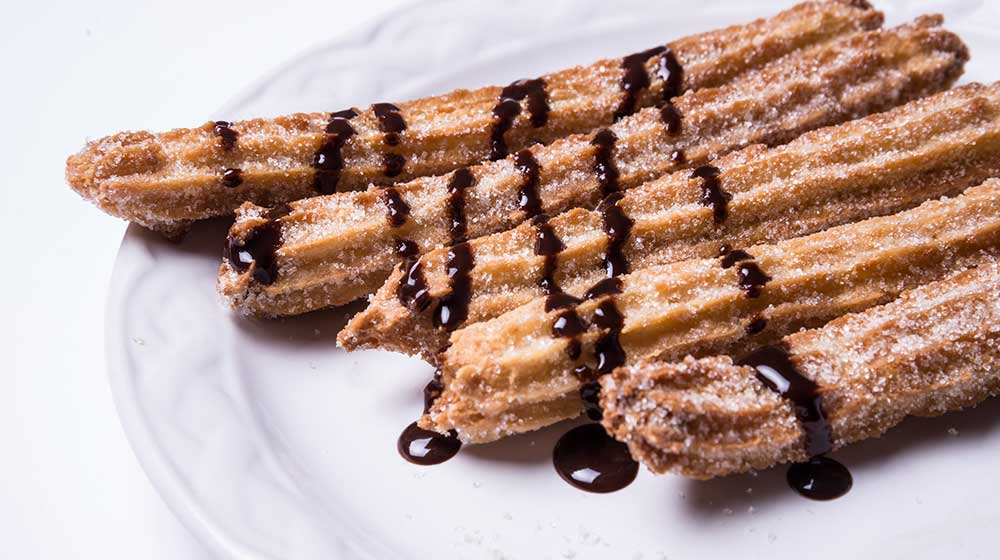

Como preparar churros caseros
Faciles y deliciosos
por Receta Online
Sigue el paso a paso de la receta de cómo preparar churros caseros y prepáralos en casa. Estamos seguras que te quedarán deliciosos.
Porque no puedes negar que siempre que escuchas al señor del clásico “Churros, churros…” no se te antojan esos deliciosos palitos cubiertos de azúcar o canela. Aunque también los hay rellenos de mermelada, leche dulce, miel, chocolate y hasta rompope
Pero déjanos contarte algunos datos curiosos sobre este postre, porque debemos aceptarlo, no es de origen mexicano. Pero tanto nos gusta que lo hemos adoptado cómo un postre típico del país. Te sorprenderás
Increíble, pero cierto. Los churros no son mexicanos, pero son de los más buscados en la feria, en el parque, saliendo del trabajo. Sin duda, uno de los platillos gastronómicos que mejor nos quedan.
Deleita a toda tu familia con esta receta de cómo preparar churros caseros fácilmente y pasa una tarde muy divertida mientras los preparas.

Manos a la obra
Instrucciones
- En una olla grande calienta el agua con la mantequilla. Cuando comience a hervir, agrega de golpe la harina y la sal. Bate rápidamente con ayuda de un batidor de globo durante 1 minuto hasta formar una bola.
- Retira del fuego y transfiere a la batidora. Mezcla y agrega los huevos uno por uno. Coloca el resultado en una manga y deja enfriar.
- Calienta el aceite. Cuando esté hirviendo, presiona la manga sobre él y corta los churros del tamaño deseado con ayuda de unas tijeras. Fríelos hasta que doren muy bien.
- Combina la canela con el azúcar y coloca los churros sobre esta mezcla al salir del aceite.
- Sirve de inmediato acompañados de cajeta.
Ingredientes
- 250 g de harina
- 2 huevos
- 1 cucharadita de canela en polvo
- 150 g de mantequilla
- 250 mL de agua
- 2 g de sal
- 200 g de azúcar
- 1 taza de cajeta quemada
- Aceite suficiente para freír
Una receta de Cocina Facil

Nuestras via de comunicacion
Nuestra web
Contacto (local)
Enviar email
Telefono
whatsapp